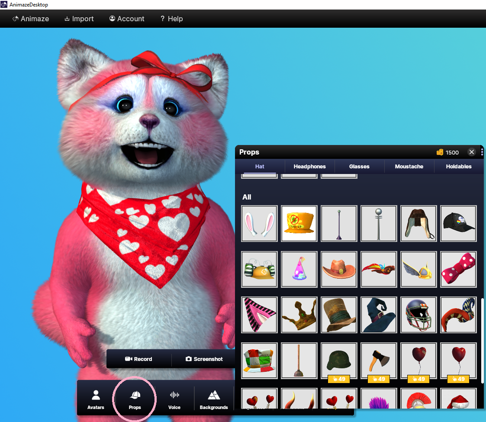
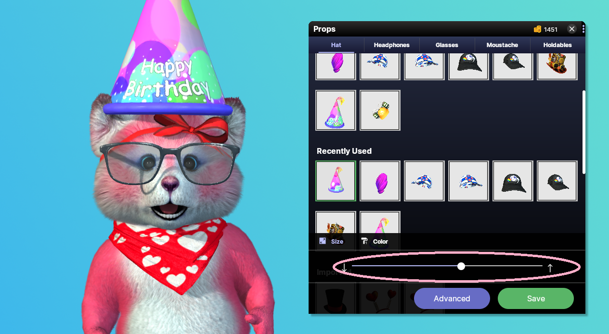
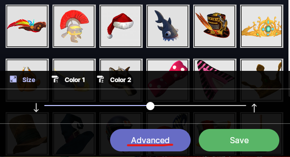
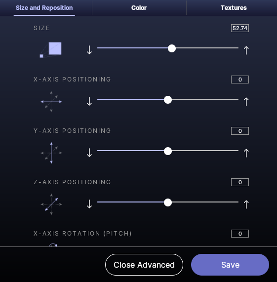
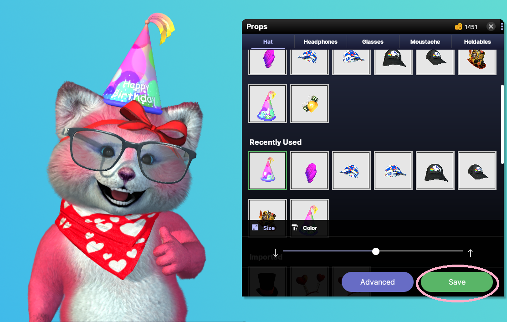

Animaze iPhone: How do I use props?
Animaze includes dozens of customizable props - accessories such as hats, glasses, and moustaches that you can attach to any avatar. Here is how you can add props to your avatar:
1. Launch Animaze
2. Click on the “Props” button with the hat icon
3. The Props gallery will open. In this gallery, props are sorted by category (such as Hats or Glasses)

4. Click on a prop to attach it to your avatar. Now you can customize the prop to fit your avatar perfectly.
-
Use the Size slider to change the size of your prop
-
Click on the color tabs to change the color of different elements of the prop

5. If you’d like to further customize your Prop (i.e. adjust its position, rotation, or textures), click on the ‘Advanced’ button.

6. Adjust the size, positioning, and rotation sliders to position your prop exactly the way you want it

7. When you are ready, click Save to apply your customized prop to your avatar

For more information on adding custom textures to your Prop, check out our Prop retexturing FAQ.